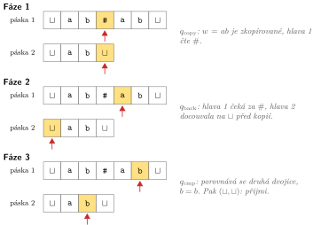
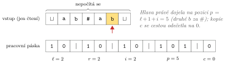
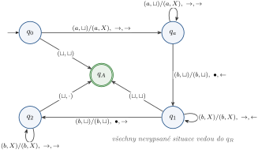
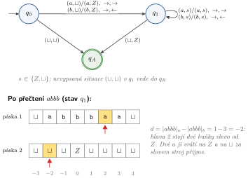
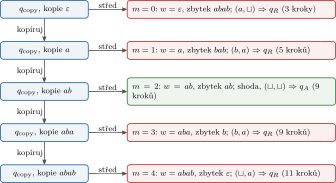
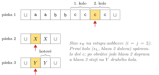
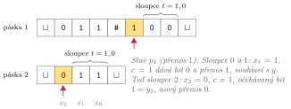

B.1 Typ 1: Turingův stroj¶
Úloha 1 testu: „Nalezněte Turingův stroj požadovaných vlastností pro zadaný jazyk. Požadované vlastnosti mohou být například mimo jiné požadavek na čas, prostor, (ne)determinismus.“ (6 bodů). Postup na papíře je v oddílu A.3.1.
B.1.1 Kde to ve skriptech je¶
- Jedna páska:
- stroj pro \(a^nb^n\) s odškrtáváním (oddíl 1.4.1, obr. 1.9) – stavový diagram, význam stavů, čas \(O(n^2)\); Cvičení 1.1 – palindromy, první symbol se pamatuje ve stavu; Cvičení 1.3 – \(a^nb^nc^n\), odškrtnutí tří písmen v jednom kole a hlídání pořadí; Cvičení 1.4 – stroj počítající funkci (binární následník, přenos); Cvičení 1.5 – konečný automat jako TS, který jen čte doprava (\(n+1\) kroků).
- Více pásek, lineární čas:
- příklad 1.6 a oddíl 1.4.2 – kopírovat, převinout, porovnat, včetně úplné přechodové tabulky; Cvičení 1.2 – druhá páska jako čítač pro \(a^nb^n\); úloha 1 a) z ukázkového testu.
- Čas a konstanty:
- definice 3.1 (nejhorší případ), věta 3.2 a důsledek 3.3 (proč stačí \(O(n)\) a nemusí se počítat přesná konstanta).
- Nedeterminismus:
- definice 4.1, 4.2 (přijímá aspoň jedna větev) a 4.4 (čas se měří na každé větvi); recept Guess & Verify v oddílu 4.7; příklad 4.3; Cvičení 2.1 – palindromy s uhodnutím prostředku, každá větev nejvýše \(n+1\) kroků; Cvičení 2.2 – hádání řetězce délky \(k\) zadané unárně; Cvičení 2.3 – certifikáty a verifikátory.
- Prostor:
- definice 12.1 a 12.8 (vstupní páska jen pro čtení, oddíl 12.3); problém 12.9 – v logaritmickém prostoru stačí aktuální vrchol a počítadlo; oddíl 12.5.3 – totéž pro implikační graf; úloha 1 b) z ukázkového testu.
- Úlohy navíc:
- oddíl 1.7 – všech osm úloh je ve formátu úlohy 1 testu: úloha 1.1 (\(a^ib^jc^i\) na jedné pásce v čase \(O(n^2)\) a na dvou páskách), 1.2 (podslovo: nedeterministicky na dvou páskách), 1.3 (\(a^ib^jc^id^j\) na dvou páskách), 1.4 (stejně \(a\), \(b\) i \(c\) na jedné pásce, na dvou páskách a v logaritmickém prostoru), 1.5 (\(a^ib^j\) s \(i\neq j\) na dvou páskách), 1.6 (mocniny dvojky na jedné pásce), 1.7 (druhé mocniny na dvou páskách v lineárním čase), 1.8 (stejně \(a\) jako \(b\) na jedné pásce v čase \(O(n\log n)\)); úlohy 1.2–1.7 mají navíc část v logaritmickém prostoru. Nedeterministické stroje (a k nim deterministický stroj v logaritmickém prostoru) v úlohách 4.1 (\(i=j\) nebo \(j=k\)), 4.4 (stejný symbol ve vzdálenosti \(k\)) a 4.8 (slova, která nejsou čtverce); stroje v logaritmickém prostoru v úlohách 12.4 a 12.7. Ze sbírky (pododdíl 1.7.4): 1.9 až 1.11 (jedna páska, odškrtávání; části „ve stylu testu“ se dvěma páskami a v logaritmickém prostoru), 1.12 (sčítání na více páskách v lineárním čase), 1.13 (kopírování) a těžší 1.14 až 1.17 (převody zápisu čísla, prvočísla, simulace pásek, krok na místě).
B.1.2 Řešené úlohy: Turingovy stroje¶
Typová úloha 1.1 [6 bodů]
Uvažujte jazyk nad abecedou \(\{a,b,\#\}\)
Např. \(ab\#ab\in L\), \(\#\in L\), \(ab\#ba\notin L\), \(ab\#ab\#ab\notin L\), \(\varepsilon\notin L\).
- Popište deterministický dvoupáskový Turingův stroj, který rozhoduje \(L\) v čase \(O(n)\). Uveďte myšlenku, význam stavů (nebo fází výpočtu) a odhad času.
- Popište deterministický Turingův stroj se vstupní páskou pouze pro čtení, který rozhoduje \(L\) s pracovním prostorem \(O(\log n)\). Zdůvodněte odhad prostoru. (Formální přechodovou funkci nepožadujeme.)
Řešení
a) Dvoupáskový stroj v čase \(O(n)\)
Myšlenka. Část před \(\#\) zkopírujeme na pásku 2, hlavu 2 vrátíme na začátek kopie a pak čteme zbytek vstupu a kopii současně, obě zleva doprava. Slovo je v \(L\), právě když se všechny dvojice shodují a obě pásky skončí ve stejném okamžiku. Na rozdíl od palindromů (příklad 1.6) se tu kopie čte ve stejném směru, proto se převíjí.
Pásky. Páska 1 nese vstup, stroj ji nepřepisuje a hlava 1 jde jen doprava (jednou stojí, jinak nikdy necouvá). Páska 2 je na začátku prázdná.
Stavy a jejich význam.
- \(q_{\mathrm{copy}}\) (počáteční):
- čteme \(w\); vše dosud přečtené je zkopírované na pásce 2 a hlava 2 stojí na první volné buňce za kopií.
- \(q_{\mathrm{back}}\):
- hlava 1 stojí na prvním symbolu za \(\#\) a čeká; hlava 2 couvá po kopii k \(\blank\) před ní.
- \(q_{\mathrm{cmp}}\):
- hlava 1 stojí na \(i\)-tém symbolu za \(\#\), hlava 2 na \(i\)-tém symbolu kopie a všech \(i-1\) předchozích dvojic se shodovalo.
- \(\qA\), \(\qR\):
- přijetí a zamítnutí.
Přechodová funkce \(\delta(q,s_1,s_2)=(q',s_1',s_2',D_1,D_2)\), \(x\in\{a,b\}\), \(s\) libovolný symbol:
| stav | přechod | význam |
|---|---|---|
| \(q_{\mathrm{copy}}\) | \(\delta(q_{\mathrm{copy}},x,\blank)=(q_{\mathrm{copy}},x,x,\Rgt,\Rgt)\) | kopíruj |
| \(\delta(q_{\mathrm{copy}},\#,\blank)=(q_{\mathrm{back}},\#,\blank,\Rgt,\Lft)\) | konec \(w\), začni převíjet | |
| \(\delta(q_{\mathrm{copy}},\blank,\blank)=(\qR,\dots)\) | ve vstupu chybí \(\#\) | |
| \(q_{\mathrm{back}}\) | \(\delta(q_{\mathrm{back}},s,x)=(q_{\mathrm{back}},s,x,\Stay,\Lft)\) | hlava 2 couvá |
| \(\delta(q_{\mathrm{back}},s,\blank)=(q_{\mathrm{cmp}},s,\blank,\Stay,\Rgt)\) | hlava 2 na začátek kopie | |
| \(q_{\mathrm{cmp}}\) | \(\delta(q_{\mathrm{cmp}},x,x)=(q_{\mathrm{cmp}},x,x,\Rgt,\Rgt)\) | dvojice se shoduje |
| \(\delta(q_{\mathrm{cmp}},\blank,\blank)=(\qA,\dots)\) | obě části skončily současně | |
| ostatní dvojice \(\to\qR\) | neshoda \((a,b)\), \((b,a)\); druhý \(\#\); jedna část delší |
Pro vstup \(\#\) (\(w=\varepsilon\)) stroj v \(q_{\mathrm{copy}}\) přečte \(\#\), v \(q_{\mathrm{back}}\) hned narazí na \(\blank\) a v \(q_{\mathrm{cmp}}\) čte \((\blank,\blank)\) – přijme.

Čas. Každá fáze je jeden průchod: v \(q_{\mathrm{copy}}\) se hlava 1 v každém kroku posune doprava (nejvýše \(n+1\) kroků), v \(q_{\mathrm{back}}\) hlava 2 přejede kopii délky nejvýše \(n\) (nejvýše \(n+1\) kroků) a v \(q_{\mathrm{cmp}}\) se obě hlavy v každém kroku posunou doprava (nejvýše \(n+1\) kroků). Celkem nejvýše \(3n+3=O(n)\) kroků a stroj vždy zastaví, tedy \(L\) rozhoduje.
b) Logaritmický pracovní prostor
Myšlenka. Na pracovní pásku se vstup kopírovat nesmí (zabral by \(\Theta(n)\) buněk). Místo toho si pamatujeme jen pozice ve vstupu, binárně. Symbol na pozici \(p\) přečteme tak, že čtecí hlavu přesuneme na začátek vstupu a posuneme ji \(p\)-krát doprava.
Pracovní páska nese pět binárních čítačů: \(\ell\) (délka části před \(\#\)), \(r\) (délka části za \(\#\)), \(i\) (index porovnávané dvojice), \(p\) (cílová pozice) a \(c\) (pracovní kopie \(p\), která se při přesunu hlavy odečítá k nule). Vše, co je konečné (kolik \(\#\) už stroj viděl, přečtený symbol \(a\) nebo \(b\)), nese stav.

Fáze výpočtu.
- Tvar. Jeden průchod vstupem; stav si pamatuje, zda už viděl 0, 1, nebo aspoň 2 symboly \(\#\). Není-li na konci počet přesně 1, zamítni. (Pracovní prostor 0.)
- Délky. Druhý průchod: před \(\#\) přičítej 1 k \(\ell\), za \(\#\) k \(r\) (binární přičítání jako v Cvičení 1.4). Na konci porovnej \(\ell\) a \(r\) bit po bitu; liší-li se, zamítni.
- Porovnání. Pro \(i=1,\dots,\ell\): nastav \(p:=i\), přesuň hlavu na pozici \(p\) (hlavu na levý okraj, \(c:=p\), posouvej doprava a odečítej od \(c\), dokud \(c\neq0\)) a přečtený symbol si zapamatuj ve stavu; pak nastav \(p:=\ell+1+i\), stejně přečti druhý symbol a porovnej. Při neshodě zamítni.
- Prošly-li všechny dvojice, přijmi.
Správnost. Fáze 1 a 2 ověří, že vstup má tvar \(u\#v\) s \(|u|=|v|=\ell\); fáze 3 porovná \(u_i\) (pozice \(i\)) s \(v_i\) (pozice \(\ell+1+i\)) pro všechna \(i\), tedy přijme právě když \(u=v\).
Prostor. Všechny čítače mají hodnotu nejvýše \(n\) (\(\ell,r\le n\), \(i\le\ell\), \(p,c\le\ell+1+\ell\le n\)), takže každý zabere nejvýše \(\lceil\log_2(n+1)\rceil\) buněk. Čítačů je pět, pevný počet nezávislý na \(n\), celkem \(5\lceil\log_2(n+1)\rceil+O(1)=O(\log n)\) buněk pracovní pásky. Vstupní páska se nepočítá a stroj na ni nepíše.
Zastavení. Každý cyklus je řízený čítačem, který dojde k nule nebo k \(\ell\), takže stroj vždy zastaví (čas je polynomiální, řádově \(n^2\log n\); zadání ho neomezuje).
Typová úloha 1.2 [6 bodů]
Uvažujte jazyk
Např. \(\varepsilon\in L\), \(ab\in L\), \(abb\in L\), \(aabbb\in L\), \(a\notin L\), \(abbb\notin L\), \(ba\notin L\).
- Popište deterministický dvoupáskový Turingův stroj, který rozhoduje \(L\) v čase \(O(n)\). Uveďte myšlenku, význam stavů a odhad času.
- Popište nedeterministický dvoupáskový Turingův stroj, který rozhoduje \(L\) tak, že každá větev jeho výpočtu na vstupu délky \(n\) skončí po nejvýše \(n+2\) krocích. Řekněte, kde stroj hádá, a zdůvodněte správnost i odhad.
Řešení
a) Deterministický stroj
Myšlenka. Za každé \(a\) zapíšeme na pásku 2 jedno \(X\) (unární čítač, jako v Cvičení 1.2). Symboly \(b\) pak s \(X\) párujeme ve dvou kolech: v prvním kole jde hlava 2 po \(X\) doleva, ve druhém po nich zpět doprava. Každé kolo spáruje nejvýše \(i\) symbolů \(b\). Podmínka \(j\ge i\) znamená, že první kolo doběhne celé; podmínka \(j\le 2i\), že druhé kolo nepřeteče za poslední \(X\).
Stavy a jejich význam (\(\qR\) ve všech nevypsaných situacích):
- \(q_0\) (počáteční):
- nic nepřečteno. \((\blank,\blank)\): prázdné slovo, přijmi. \((a,\blank)\): zapiš \(X\), obě hlavy \(\Rgt\), do \(q_a\). \((b,\cdot)\): \(i=0<j\), zamítni.
- \(q_a\):
- čteme blok \(a\); na pásce 2 je tolik \(X\), kolik bylo \(a\), hlava 2 za nimi. \((a,\blank)\): zapiš \(X\), \(\Rgt\Rgt\). \((b,\blank)\): hlava 1 stojí, hlava 2 \(\Lft\) na poslední \(X\), do \(q_1\). \((\blank,\blank)\): \(j=0<i\), zamítni.
- \(q_1\) (první kolo):
- počet dosud přečtených \(b\) = počet \(X\) vpravo od hlavy 2. \((b,X)\): \(\Rgt\Lft\). \((\blank,\blank)\): \(j=i\), přijmi. \((\blank,X)\): \(j<i\), zamítni. \((b,\blank)\): všech \(i\) symbolů \(X\) je spárováno a přišlo další \(b\); hlava 1 stojí, hlava 2 \(\Rgt\) na první \(X\), do \(q_2\). \((a,\cdot)\): \(a\) za \(b\), zamítni.
- \(q_2\) (druhé kolo):
- dosud přečteno \(i\) plus (počet \(X\) vlevo od hlavy 2) symbolů \(b\). \((b,X)\): \(\Rgt\Rgt\). \((\blank,\cdot)\): \(i<j\le 2i\), přijmi. \((b,\blank)\): \(j>2i\), zamítni. \((a,\cdot)\): zamítni.

Stavový diagram stroje z části a); zápis \((s_1,s_2)/(s_1',s_2'),\ D_1,D_2\) čti „pod hlavami je \(s_1,s_2\), zapiš \(s_1',s_2'\) a posuň hlavy“. Všimni si: hlava 2 jde po \(X\) v \(q_1\) doleva a v \(q_2\) zpět doprava – to jsou dvě kola párování. Do \(q_2\) se dostane jen slovo s \(j>i\) a přeteče-li i druhé kolo (\(j>2i\)), čte \(q_2\) dvojici \((b,\blank)\) a zamítne.
Čas. Hlava 1 se posune doprava v každém kroku kromě dvou přepnutí (\(q_a\to q_1\), \(q_1\to q_2\)), poslední krok čte \(\blank\) za slovem. Celkem nejvýše \(n+3=O(n)\) kroků; každý výpočet skončí, stroj \(L\) rozhoduje.
Myšlenka (Guess & Verify). Každé \(a\) „uhodne“, zda bude spárované s jedním, nebo se dvěma \(b\), a zapíše na pásku 2 značku \(1\) nebo \(2\). Pak se ověří, že součet značek je přesně \(j\). Slovo \(a^ib^j\) je v \(L\), právě když existují \(c_1,\dots,c_i\in\{1,2\}\) se součtem \(j\), protože takové součty nabývají právě všech hodnot od \(i\) do \(2i\).
Stavy.
- \(p_a\) (počáteční, hádání):
- \((a,\blank)\): nedeterministicky zapiš \(1\), nebo \(2\); \(\Rgt\Rgt\). \((b,\blank)\) i \((\blank,\blank)\): hlava 1 stojí, hlava 2 \(\Lft\) na poslední značku, do \(p_b\). (Jediné místo nedeterminismu.)
- \(p_b\) (ověřování):
- hlava 2 stojí na nejpravější dosud nespárované značce. \((b,1)\): \(\Rgt\Lft\). \((b,2)\): hlava 1 \(\Rgt\), hlava 2 stojí, do \(p_b'\). \((\blank,\blank)\): značky i \(b\) došly současně, přijmi. Ostatní (\((\blank,1)\), \((\blank,2)\): málo \(b\); \((b,\blank)\): moc \(b\); \((a,\cdot)\): špatné pořadí) zamítni.
- \(p_b'\):
- ze značky \(2\) pod hlavou 2 je spotřebované jedno \(b\). \((b,2)\): \(\Rgt\Lft\), zpět do \(p_b\). Jinak zamítni.
Správnost. Je-li \(i\le j\le 2i\), větev, která zapíše \(j-i\) dvojek a \(2i-j\) jedniček, spáruje přesně \(j\) symbolů \(b\) a přijme. Naopak přijímající větev prošla tvarem \(a^ib^j\) (stavy nedovolí \(a\) za \(b\)) a spárovala všech \(j\) symbolů \(b\) se všemi značkami, takže \(j=c_1+\dots+c_i\in[i,2i]\). Prázdné slovo: \(p_a\) čte \(\blank\), \(p_b\) čte \((\blank,\blank)\) a přijme. Slovo začínající \(b\): \(p_b\) čte \((b,\blank)\) a zamítne.
Délka větví. V každém kroku se hlava 1 posune doprava, kromě jediného přepnutí \(p_a\to p_b\). Hlava 1 nikdy nepřejede \(\blank\) za slovem (tam každá větev skončí), takže každá větev má nejvýše \(n+1\) posunů a jedno přepnutí, celkem nejvýše \(n+2\) kroků. Přijímající větev jich má přesně \(i+1+j+1=n+2\).
K typové úloze 1.2
Nedeterminismus tu stroj nezrychlí (deterministický stroj z části a) má také \(O(n)\)), jen zjednoduší myšlenku: místo dvou kol párování stačí uhodnout, kolik \(b\) připadne na které \(a\). Stejně jako v Cvičení 2.1 se v odhadu počítají všechny větve, i ty zamítající.
Typová úloha 1.3 [6 bodů]
Uvažujte jazyk nad abecedou \(\{a,b\}\)
kde \(|w|_a\) je počet výskytů písmene \(a\) ve slově \(w\). Např. \(\varepsilon\in L\), \(abba\in L\), \(babaab\in L\), \(aab\notin L\), \(b\notin L\).
- Popište deterministický dvoupáskový Turingův stroj, který rozhoduje \(L\) v čase \(O(n)\). Uveďte myšlenku, význam stavů (nebo fází výpočtu) a odhad času.
- Popište deterministický Turingův stroj se vstupní páskou pouze pro čtení, který rozhoduje \(L\) s pracovním prostorem \(O(\log n)\). Zdůvodněte odhad prostoru. (Formální přechodovou funkci nepožadujeme.)
Řešení
a) Dvoupáskový stroj v čase \(O(n)\)
Myšlenka. Na rozdíl od \(a^nb^n\) (Cvičení 1.2) tu písmena nejdou v blocích, takže čítač musí umět růst i klesat a jít i pod nulu. Jako čítač poslouží přímo poloha hlavy 2: v prvním kroku zapíšeme na pásku 2 značku \(Z\) (počátek), pak za každé \(a\) posuneme hlavu 2 doprava a za každé \(b\) doleva. Po přečtení předpony \(u\) stojí hlava 2 přesně \(|u|_a-|u|_b\) buněk napravo od \(Z\) (záporné číslo znamená nalevo). Pásky jsou oboustranně nekonečné (definice 1.5), pohyb doleva od \(Z\) je tedy v pořádku. Na konci vstupu stačí zjistit, zda hlava 2 stojí na \(Z\).
Pásky. Páska 1 nese vstup, stroj ji nepřepisuje a hlava 1 jde v každém kroku doprava. Na pásku 2 se zapíše jediný symbol \(Z\), všude jinde zůstane \(\blank\). Hlava 2 proto čte \(Z\), právě když je rozdíl nulový.
Stavy a jejich význam (\(s\in\{Z,\blank\}\) je symbol pod hlavou 2, stroj ho v \(q_1\) nepřepisuje):
- \(q_0\) (počáteční):
- nic nepřečteno, páska 2 prázdná. \((\blank,\blank)\): \(w=\varepsilon\), přijmi. \((a,\blank)\): zapiš \(Z\), pohyb \(\Rgt,\Rgt\), do \(q_1\). \((b,\blank)\): zapiš \(Z\), pohyb \(\Rgt,\Lft\), do \(q_1\).
- \(q_1\):
- přečtena neprázdná předpona \(u\), hlava 2 stojí \(|u|_a-|u|_b\) buněk od \(Z\) (kladně doprava). \((a,s)\): pohyb \(\Rgt,\Rgt\). \((b,s)\): pohyb \(\Rgt,\Lft\). \((\blank,Z)\): rozdíl je \(0\), přijmi. \((\blank,\blank)\): rozdíl je nenulový, zamítni.

Stavový diagram stroje z části a) a jeho konfigurace na vstupu \(abbbaa\) po čtyřech přečtených písmenech; čísla pod páskou 2 jsou polohy vůči \(Z\). Všimni si: páska 2 se kromě prvního kroku nepřepisuje, čítačem je jen poloha hlavy.
Správnost. Indukcí podle délky přečtené předpony: po prvním kroku stojí hlava 2 o \(+1\) (bylo \(a\)) nebo \(-1\) (bylo \(b\)) od \(Z\) a každý další krok změní její polohu přesně o příspěvek přečteného písmena. Na konci vstupu je tedy hlava 2 o \(|w|_a-|w|_b\) od \(Z\) a čte \(Z\), právě když \(|w|_a=|w|_b\). Na příkladech: u \(abba\) projde hlava 2 polohami \(1,0,-1,0\) a stroj přijme; u \(aab\) polohami \(1,2,1\), na konci čte \(\blank\) a zamítne.
Čas. Každý krok kromě posledního posune hlavu 1 doprava, poslední krok čte \(\blank\) za slovem. Stroj udělá na každém vstupu délky \(n\) přesně \(n+1\) kroků, čas je \(O(n)\) a stroj vždy zastaví.
b) Logaritmický pracovní prostor
Myšlenka. Poloha hlavy 2 z části a) by na pracovní pásce zabrala až \(n\) buněk. Rozdíl \(d=|u|_a-|u|_b\) si proto pamatujeme binárně: na pracovní pásce je jeho absolutní hodnota \(|d|\), znaménko (\(+\) pro \(d>0\), \(-\) pro \(d<0\)) je jedna informace z konečně mnoha a nese ji stav.
Algoritmus. Na začátku \(|d|=0\). Hlava na vstupní pásce jde postupně po symbolech \(s\):
- \(s=a\): je-li \(|d|=0\) nebo znaménko \(+\), nastav znaménko \(+\) a \(|d|:=|d|+1\); jinak (znaménko \(-\) a \(|d|>0\)) \(|d|:=|d|-1\).
- \(s=b\): symetricky; je-li \(|d|=0\) nebo znaménko \(-\), nastav znaménko \(-\) a \(|d|:=|d|+1\); jinak \(|d|:=|d|-1\).
- \(s=\blank\) (konec vstupu): přijmi, právě když \(|d|=0\).
Čítač na pásce je stejný jako v úloze 1 b) ukázkového testu: zarážka \(\triangleright\), za ní bity \(|d|\) s nejnižším bitem vlevo, přičtení a odečtení jedničky šířením přenosu, test nuly jedním průchodem a návrat hlavy k zarážce.
Správnost. Invariant: po přečtení předpony \(u\) je na pracovní pásce \(|d|\) a ve stavu znaménko \(d\), kde \(d=|u|_a-|u|_b\). Písmeno \(a\) zvětší \(d\) o 1, tedy pro \(d\ge0\) zvětší \(|d|\) a pro \(d<0\) ho zmenší; pro \(b\) symetricky. Na konci je \(|w|_a=|w|_b\), právě když \(|d|=0\).
Prostor. Vždy \(|d|\le n\), takže \(|d|\) má nejvýše \(\lfloor\log_2 n\rfloor+1\) bitů. Se zarážkou a jednou buňkou \(\blank\) za bity, kterou čte přenos nebo test nuly, použije pracovní páska nejvýše \(\lfloor\log_2 n\rfloor+3\) buněk, to je \(O(\log n)\). Vstupní páska se nepočítá a nepíše se na ni; pozici ve vstupu drží její hlava, znaménko stav. Stroj vždy zastaví: vstup čte jednou zleva doprava a každá operace s čítačem trvá \(O(\log n)\) kroků.
Varianta. Stejně dobře poslouží dva čítače \(|u|_a\) a \(|u|_b\), porovnané na konci bit po bitu (jako v Úloha 1: Turingův stroj [6 bodů]); oba jsou nejvýše \(n\). Každý může mít vlastní pracovní pásku (definice 12.1 počítá buňky všech pracovních pásek), porovnání je pak jeden společný průchod obou pracovních hlav od nejnižšího bitu.
Typová úloha 1.4 [6 bodů]
Uvažujte jazyk nad abecedou \(\{a,b\}\)
Např. \(\varepsilon\in L\), \(bb\in L\), \(abab\in L\), \(aba\notin L\), \(abba\notin L\).
- Popište nedeterministický dvoupáskový Turingův stroj, který rozhoduje \(L\) tak, že každá větev jeho výpočtu na vstupu délky \(n\) skončí po \(O(n)\) krocích. Řekněte, kde stroj hádá, a zdůvodněte správnost i odhad délky větví.
- Popište deterministický Turingův stroj se vstupní páskou pouze pro čtení, který rozhoduje \(L\) s pracovním prostorem \(O(\log n)\). Zdůvodněte odhad prostoru. (Formální přechodovou funkci nepožadujeme.)
Řešení
a) Nedeterministický stroj, každá větev \(O(n)\)
Myšlenka (Guess & Verify). Proti typové úloze 1.1 tu chybí oddělovač \(\#\), stroj neví, kde končí první \(w\). Uhodne to: kopíruje vstup na pásku 2 a před každým symbolem (i na konci vstupu) se nedeterministicky rozhodne, zda je „tady prostředek“. Pak stejně jako v úloze 1.1 převine hlavu 2 na začátek kopie a porovná zbytek vstupu s kopií, obojí zleva doprava. Hádá se jediná pozice, jako prostředek palindromu v Cvičení 2.1.
Stavy a jejich význam (\(x\in\{a,b\}\), \(s\) libovolný symbol, \(\qR\) ve všech nevypsaných situacích):
- \(q_{\mathrm{copy}}\) (počáteční, hádání):
- na pásce 2 je kopie dosud přečtené předpony \(u\), hlava 2 stojí na první volné buňce za ní. Při \((x,\blank)\) nedeterministicky buď zapiš \(x\) na pásku 2 a posuň obě hlavy \(\Rgt\) (kopíruj dál), nebo nech hlavu 1 stát, hlavu 2 posuň \(\Lft\) a přejdi do \(q_{\mathrm{back}}\) (prostředek je tady, hádané \(w\) je \(u\)). Při \((\blank,\blank)\) je možná jen druhá volba. (Jediné místo nedeterminismu.)
- \(q_{\mathrm{back}}\):
- hlava 1 čeká na prvním symbolu za hádaným prostředkem (nebo na \(\blank\)), hlava 2 couvá po kopii. \((s,x)\): hlava 2 \(\Lft\). \((s,\blank)\): hlava 2 \(\Rgt\) na začátek kopie, do \(q_{\mathrm{cmp}}\).
- \(q_{\mathrm{cmp}}\):
- hlava 1 stojí na \(i\)-tém symbolu zbytku vstupu, hlava 2 na \(i\)-tém symbolu kopie a všech \(i-1\) předchozích dvojic se shodovalo. \((x,x)\): obě hlavy \(\Rgt\). \((\blank,\blank)\): obě části skončily současně, přijmi. Jinak (neshoda, jedna část delší) zamítni.

Strom výpočtu stroje z části a) na vstupu \(abab\): v každé konfiguraci \(q_{\mathrm{copy}}\) se větví na „kopíruj dál“ a „prostředek je tady“; větev \(m\) uhodne prostředek po \(m\) zkopírovaných symbolech. Přijme jediná větev \(m=2\), tedy \(abab\in L\). Nejdelší větev (\(m=4\)) má \(2n+3=11\) kroků.
Správnost. Větev, která uhodne prostředek po \(m\) zkopírovaných symbolech, má na pásce 2 kopii \(u=x_1\dots x_m\) a v \(q_{\mathrm{cmp}}\) přijme, právě když se zbytek vstupu \(v=x_{m+1}\dots x_n\) shoduje s \(u\) symbol po symbolu a obě slova skončí současně, tj. právě když \(v=u\). Je-li vstup \(ww\), přijme větev \(m=|w|\). Přijme-li naopak některá větev \(m\), je vstup \(uu\in L\). Stroj tedy přijímá (aspoň jedna větev přijme, definice 4.2) právě slova z \(L\). Větví je přesně \(n+1\) (\(m=0,\dots,n\)). Prázdné slovo: \(q_{\mathrm{copy}}\) čte \((\blank,\blank)\), \(q_{\mathrm{back}}\) hned narazí na \(\blank\) a \(q_{\mathrm{cmp}}\) čte \((\blank,\blank)\), přijme.
Délka větví. Větev \(m\) udělá v \(q_{\mathrm{copy}}\) \(m\) kopírovacích kroků a jeden krok „prostředek“, v \(q_{\mathrm{back}}\) \(m\) kroků po kopii a jeden na \(\blank\), v \(q_{\mathrm{cmp}}\) nejvýše \(\min(m,n-m)+1\) kroků. Celkem nejvýše \(2m+\min(m,n-m)+3\le 2n+3\) kroků; pro \(m<n\) je to nejvýše \(m+n+3\), pro \(m=n\) přesně \(2n+3\). Každá větev, i zamítající, tedy skončí po \(O(n)\) krocích (definice 4.4).
b) Deterministický stroj v logaritmickém prostoru
Myšlenka. Jako v části b) typové úlohy 1.1, jen místo hledání oddělovače spočítáme prostředek: vstup \(x=x_1\dots x_n\) je v \(L\), právě když \(n\) je sudé a \(x_i=x_{h+i}\) pro všechna \(i=1,\dots,h\), kde \(h=n/2\). Na pracovní pásce jsou jen binární čítače, symboly se čtou přímo ze vstupu.
Pracovní pásky nesou čtyři binární čítače: \(h\) (polovina délky), \(i\) (index porovnávané dvojice), \(p\) (cílová pozice ve vstupu) a \(c\) (pracovní kopie \(p\), která se při přesunu hlavy odečítá k nule). Každý čítač má vlastní pracovní pásku s nejnižším bitem vlevo, takže může růst, aniž by přepsal soused (definice 12.1 počítá buňky všech pracovních pásek, jejich pevný počet nevadí). Parita a přečtený symbol nese stav.
Fáze výpočtu.
- Polovina délky. Jeden průchod vstupem; stav si pamatuje paritu počtu přečtených symbolů a při každém druhém symbolu přičte 1 k \(h\). Je-li na konci parita lichá, zamítni. Jinak je \(h=n/2\).
- Porovnání. Pro \(i=1,\dots,h\): nastav \(p:=i\) a přesuň hlavu na pozici \(p\) (hlavu na levý okraj, \(c:=p\), posouvej doprava a odečítej od \(c\), dokud \(c\neq0\)); přečtený symbol si zapamatuj ve stavu. Pak nastav \(p:=h+i\) (\(p:=h\) a \(i\)-krát přičti 1, \(c:=i\) slouží jako počítadlo), stejně přečti druhý symbol a porovnej. Při neshodě zamítni.
- Prošly-li všechny dvojice, přijmi.
Operace s čítači. Přičtení a odečtení jedničky a test nuly jsou jako v úloze 1 b) ukázkového testu. Kopie (např. \(c:=p\)) je jeden společný průchod dvou pracovních hlav od nejnižšího bitu: hlava cílového čítače přepisuje bity zdroje a své bity za koncem zdroje maže. Cyklus pro \(i=1,\dots,h\) stroj při \(h=0\) (test nuly) přeskočí a po každé dvojici porovná \(i\) s \(h\) stejným společným průchodem bit po bitu; při rovnosti skončí, jinak \(i:=i+1\). Přesun vstupní hlavy na pozici \(p\): hlava jde doleva, dokud nečte \(\blank\) před vstupem (pozice \(0\)), pak se posouvá doprava, každým posunem odečte 1 od \(c\) a zastaví při \(c=0\), tedy po \(p\) posunech na pozici \(p\).
Správnost. Fáze 1 zamítne slova liché délky a pro sudé \(n\) dá \(h=n/2\). Fáze 2 porovná \(x_i\) s \(x_{h+i}\) pro všechna \(i\le h\), tedy první polovinu slova s druhou; přijme, právě když jsou stejné. Pro \(\varepsilon\) je \(h=0\), nic se neporovnává a stroj přijme.
Prostor. Všechny čítače mají hodnotu nejvýše \(n\) (\(h=n/2\), \(i\le h\), \(p\le h+i\le n\), \(c\le p\)), takže každý zabere nejvýše \(\lceil\log_2(n+1)\rceil\) buněk. Čítače jsou čtyři, pevný počet nezávislý na \(n\), celkem \(4\lceil\log_2(n+1)\rceil+O(1)=O(\log n)\) buněk pracovní pásky. Vstupní páska se nepočítá a stroj na ni nepíše. Stroj vždy zastaví, protože každý cyklus řídí čítač, který dojde k nule nebo k \(h\).
K typové úloze 1.4
Hádat lze i celé slovo \(w\) (zapsat ho nedeterministicky na pásku 2 a pak ověřit \(x=ww\)). Pak ale musí být délka hádání omezená, např. tím, že každý zapsaný symbol posune i hlavu 1; jinak má stroj nekonečné větve a nesplní požadavek „každá větev \(O(n)\)“ (viz typické chyby v oddílu A.3.1). Hádání jediné pozice prostředku tento problém nemá: každý krok \(q_{\mathrm{copy}}\) posune hlavu 1.
Typová úloha 1.5 [6 bodů]
Uvažujte jazyk
Např. \(\varepsilon\in L\), \(aa\in L\), \(abc\in L\), \(aabbcccc\in L\), \(aab\notin L\), \(abcc\notin L\), \(acb\notin L\).
- Popište deterministický vícepáskový Turingův stroj, který rozhoduje \(L\) v čase \(O(n)\). Uveďte myšlenku, význam stavů (nebo fází výpočtu) a odhad času.
- Popište deterministický Turingův stroj se vstupní páskou pouze pro čtení, který rozhoduje \(L\) s pracovním prostorem \(O(\log n)\). Zdůvodněte odhad prostoru. (Formální přechodovou funkci nepožadujeme.)
Řešení
a) Třípáskový stroj v čase \(O(n)\)
Myšlenka. Unární čítače jako v úloze 1 ukázkového testu, jen \(k\) se má rovnat součinu. Na pásku 2 zapíšeme \(i\) značek \(X\) (za každé \(a\) jednu), na pásku 3 \(j\) značek \(Y\) (za každé \(b\) jednu). Pak hlava 2 jezdí po bloku \(X\) tam a zpět: jeden průjezd („kolo“) spáruje \(i\) symbolů \(c\), jeden s každým \(X\), a po každém kole se hlava 3 posune o jedno \(Y\). Po \(j\) kolech je spárováno přesně \(i\cdot j\) symbolů \(c\); slovo je v \(L\), právě když v tu chvíli skončí vstup. Na konci kola se hlava 2 nevrací na začátek bloku, další kolo jede opačným směrem.
Pásky. Páska 1 nese vstup, stroj ji nepřepisuje a hlava 1 jde jen doprava. Páska 2 nese \(X^i\), páska 3 nese \(Y^j\); obě jsou na začátku prázdné.
Stavy a jejich význam (\(\qR\) ve všech nevypsaných situacích):
- \(q_a\) (počáteční):
- čteme blok \(a\); na pásce 2 je tolik \(X\), kolik bylo přečteno \(a\), hlava 2 stojí za nimi. Hlava 1 na \(a\): zapiš \(X\), hlavy 1 a 2 \(\Rgt\). Na \(b\): zapiš \(Y\) na pásku 3, hlavy 1 a 3 \(\Rgt\), do \(q_b\). Na \(c\) nebo \(\blank\): hlava 1 stojí, hlavy 2 a 3 o krok \(\Lft\) (na poslední \(X\) a poslední \(Y\), resp. na \(\blank\), je-li blok prázdný), do \(s_L\).
- \(q_b\):
- čteme blok \(b\); na pásce 3 je tolik \(Y\), kolik bylo přečteno \(b\), hlava 3 stojí za nimi. Na \(b\): zapiš \(Y\), hlavy 1 a 3 \(\Rgt\). Na \(c\) nebo \(\blank\): jako v \(q_a\), do \(s_L\). Na \(a\): \(a\) za \(b\), zamítni.
- \(s_L\), \(s_R\) (kola):
hlava 3 stojí na \(Y\) právě běžícího kola (\(Y\) napravo od ní patří k dokončeným kolům), hlava 2 jede po bloku \(X\) doleva (\(s_L\)), resp. doprava (\(s_R\)) a každé \(X\), přes které v tomto kole přejela, je spárované s jedním \(c\). Situace se rozhodují v tomto pořadí:
- pod hlavou 3 je \(\blank\) (všech \(j\) kol hotovo): přijmi, právě když hlava 1 čte \(\blank\);
- pod hlavou 2 je \(X\): hlava 1 musí číst \(c\), pak hlava 1 \(\Rgt\) a hlava 2 o krok ve směru kola; čte-li hlava 1 \(\blank\) (málo \(c\)) nebo \(a\), \(b\) (špatné pořadí), zamítni;
- pod hlavou 2 je \(\blank\) (konec bloku, kolo hotovo): hlava 1 stojí, hlava 2 o krok zpět na krajní \(X\), hlava 3 o krok \(\Lft\) na \(Y\) dalšího kola, přepni \(s_L\leftrightarrow s_R\).

Konfigurace třípáskového stroje z části a) na začátku druhého kola (po 8 krocích). Druhé kolo spáruje zbylá dvě \(c\), pak hlava 3 přejde na \(\blank\), hlava 1 čte \(\blank\) a stroj přijme (celkem 12 kroků). Všimni si: hlava 2 jezdí tam a zpět, ale každý její krok uvnitř kola spotřebuje jedno \(c\).
Proč stroj rozhoduje \(L\). Tvar \(a^*b^*c^*\) hlídají stavy: \(a\) za \(b\) zachytí \(q_b\), \(a\) nebo \(b\) za \(c\) zachytí kola (čtou jen \(c\)) nebo závěrečný test na \(\blank\). Má-li vstup tvar \(a^ib^jc^k\), zapíšou \(q_a\) a \(q_b\) přesně \(i\) značek \(X\) a \(j\) značek \(Y\). Každé kolo přejede všech \(i\) značek \(X\), takže spáruje přesně \(i\) symbolů \(c\), nebo zamítne, když \(c\) dojdou dřív. Po \(j\) kolech je spárováno \(i\cdot j\) symbolů \(c\) a stroj přijme, právě když hlava 1 čte \(\blank\), tj. \(k=i\cdot j\). Okrajové případy: pro \(j=0\) je hlava 3 hned na \(\blank\) a stroj přijme, právě když \(k=0\); pro \(i=0\) se kola jen obracejí a žádné \(c\) nespárují, takže opět musí být \(k=0\); pro \(\varepsilon\) projde \(q_a\to s_L\to\qA\).
Čas. Fáze \(q_a\), \(q_b\) mají \(i+j\) kroků a jeden přechod do \(s_L\). V kolech každý krok buď posune hlavu 1 přes jedno \(c\) (nejvýše \(k\) takových kroků), nebo je to obrátka na konci kola (nejvýše \(j\)), plus poslední krok do \(\qA\)/\(\qR\). Celkem nejvýše \((i+j+1)+k+j+1=n+j+2\le 2n+2\) kroků, tedy \(O(n)\). Pozor, odhad „\(j\) kol po \(i\) krocích“ dává \(i\cdot j\), což může být až \(n^2/4\); tady to nevadí jen proto, že každý krok kola spotřebuje jedno \(c\) ze vstupu, takže kroků v kolech je nejvýše \(k\le n\).
b) Logaritmický pracovní prostor
Myšlenka. Počty \(i,j,k\) si zapíšeme binárně (jako v úloze 1 b) ukázkového testu). Součin \(i\cdot j\) ale počítat nemusíme: dvojitým cyklem „pro každé z \(j\) písmen \(b\) a pro každé z \(i\) písmen \(a\)“ odečteme od \(k\) jedničku. Slovo je v \(L\), právě když \(k\) přitom neklesne pod nulu a skončí na nule.
Pracovní pásky nesou pět binárních čítačů \(i\), \(j\), \(k\), \(t\), \(s\), každý na vlastní pracovní pásce s nejnižším bitem vlevo (definice 12.1 počítá buňky všech pracovních pásek, jejich pevný počet nevadí); fáze \(A/B/C\) při kontrole tvaru je ve stavu.
Fáze výpočtu.
- Počty a tvar. Jeden průchod vstupem. Fáze \(A\), \(B\), \(C\) ve stavu hlídá pořadí (\(a\) za \(b\) nebo \(a\), \(b\) za \(c\): zamítni) a za každé \(a\), \(b\), \(c\) se přičte 1 k \(i\), \(j\), \(k\).
- Odečítání. \(t:=j\). Dokud \(t\neq0\): \(s:=i\); dokud \(s\neq0\): je-li \(k=0\), zamítni (je \(k<i\cdot j\)), jinak \(k:=k-1\) a \(s:=s-1\); pak \(t:=t-1\).
- Konec. Přijmi, právě když \(k=0\).
Operace s čítači. Přičtení a odečtení jedničky a test nuly jsou jako v úloze 1 b) ukázkového testu. Kopie \(t:=j\) a \(s:=i\) je jeden společný průchod dvou pracovních hlav od nejnižšího bitu: hlava cílového čítače přepisuje bity zdroje a své bity za koncem zdroje maže. Ve fázích 2 a 3 se ze vstupu už nic nečte.
Správnost. Vnitřní cyklus proběhne \(i\)-krát, vnější \(j\)-krát, fáze 2 tedy od \(k\) odečte přesně \(i\cdot j\) jedniček, pokud \(k\) nedojde dřív; zamítne v ní, právě když \(k<i\cdot j\). Po ní zbývá \(k-i\cdot j\), a to je \(0\), právě když \(k=i\cdot j\). Na příkladech: \(aabbcccc\) odečte \(4\) ze \(4\) a přijme; \(abcc\) skončí s \(k=1\) a zamítne; \(aab\) chce odečíst \(2\) od \(k=0\) a zamítne.
Prostor. Všech pět čítačů má hodnotu nejvýše \(n\): \(i,j,k\le n\), \(t\le j\), \(s\le i\) a \(k\) jen klesá. Každý zabere nejvýše \(\lceil\log_2(n+1)\rceil\) buněk, celkem \(5\lceil\log_2(n+1)\rceil+O(1)=O(\log n)\) buněk pracovní pásky. Součin \(i\cdot j\) se nikam nezapisuje. (Kdyby se zapsal, byl by nejvýše \(n^2/4\) a měl by nejvýše \(2\log_2 n\) bitů, i to je \(O(\log n)\).) Vstupní páska se nepočítá, tvar hlídá stav. Stroj vždy zastaví: oba cykly řídí čítače, které klesají k nule. Čas se v b) neomezuje.
Typová úloha 1.6 [6 bodů]
Pro slovo \(u\in\{0,1\}^+\) označme \((u)_2\) číslo, které \(u\) zapisuje binárně (nejvyšší bit vlevo, úvodní nuly jsou povolené). Uvažujte jazyk nad abecedou \(\{0,1,\#\}\)
Např. \(011\#100\in L\), \(1\#10\in L\), \(0\#01\in L\), \(11\#0100\in L\), \(1\#1\notin L\), \(1\#11\notin L\), \(\#1\notin L\).
- Popište deterministický dvoupáskový Turingův stroj, který rozhoduje \(L\) v čase \(O(n)\). Uveďte myšlenku, význam stavů (nebo fází výpočtu) a odhad času.
- Popište deterministický Turingův stroj se vstupní páskou pouze pro čtení, který rozhoduje \(L\) s pracovním prostorem \(O(\log n)\). Zdůvodněte odhad prostoru. (Formální přechodovou funkci nepožadujeme.)
Řešení
a) Dvoupáskový stroj v čase \(O(n)\)
Myšlenka. Jednička se přičítá zprava (Cvičení 1.4). Část \(x\) proto zkopírujeme na pásku 2, obě hlavy postavíme na poslední bity \(x\) a \(y\) a jdeme s nimi současně doleva jako při písemném sčítání \(x+1\). Označme \(x_t\), \(y_t\) bit s váhou \(2^t\) (tedy \(t\)-tý zprava, od nuly). Přenos \(c\) (na začátku \(1\), to je ta přičtená jednička) si stroj pamatuje ve stavu. Ve sloupci \(t\) musí být \(y_t=(x_t+c)\bmod 2\) a nový přenos je \(\lfloor(x_t+c)/2\rfloor\). Kratší z obou čísel doplníme vlevo nulami: hlava, která svoje číslo už přejela, zůstane stát.
Pásky. Páska 1 nese vstup, stroj ji nepřepisuje. Páska 2 nese kopii \(x\). Hlavy jdou nejdřív doprava (kopie, přejetí \(y\)) a pak obě doleva (sčítání); každá se otočí jen jednou.
Stavy a jejich význam (\(\qR\) ve všech nevypsaných situacích):
- \(q_0\) (počáteční):
- první symbol musí být bit (část \(x\) je neprázdná): zapiš ho na pásku 2, obě hlavy \(\Rgt\), do \(q_x\). Na \(\#\) nebo \(\blank\) zamítni.
- \(q_x\):
- kopírujeme \(x\), hlava 2 stojí za kopií. Na bitu: zapiš ho, obě hlavy \(\Rgt\). Na \(\#\): hlava 1 \(\Rgt\), hlava 2 stojí, do \(q_{y0}\). Na \(\blank\): chybí \(\#\), zamítni.
- \(q_{y0}\), \(q_y\):
- přejíždíme \(y\), hlava 2 stojí. V \(q_{y0}\) musí být bit (část \(y\) je neprázdná): hlava 1 \(\Rgt\), do \(q_y\). V \(q_y\) na bitu hlava 1 \(\Rgt\); na \(\blank\) obě hlavy \(\Lft\) (na \(y_0\) a \(x_0\)), do \(p_1\); na druhém \(\#\) zamítni.
- \(p_0\), \(p_1\) (sčítání, index = přenos \(c\)):
- hlava 1 stojí na \(y_t\), nebo na \(\#\), je-li \(y\) vyčerpané; hlava 2 na \(x_t\), nebo na \(\blank\) vlevo od kopie, je-li vyčerpané \(x\); sloupce \(0,\dots,t-1\) souhlasily. Chybějící bit ber jako \(0\). Jsou-li vyčerpaná obě čísla, přijmi, právě když \(c=0\). Jinak: je-li \(y_t\neq(x_t+c)\bmod2\), zamítni; jinak přejdi do \(p_{c'}\) s \(c'=\lfloor(x_t+c)/2\rfloor\) a posuň doleva každou hlavu, která ještě nestojí na \(\#\), resp. \(\blank\).

Výpočet stroje z části a) na vstupu \(011\#100\) po 10 krocích, uprostřed fáze sčítání. Pak hlava 1 dojde na \(\#\), hlava 2 na \(\blank\), přenos je \(0\) a stroj přijme (celkem 12 kroků).
Správnost. Fáze \(q_0\) až \(q_y\) propustí jen vstupy tvaru \(x\#y\) s neprázdnými \(x,y\in\{0,1\}^+\). Fáze \(p_c\) je písemné sčítání \(x+1\) sloupec po sloupci, kratší číslo doplněné nulami. Přijme, právě když každý bit \(y\) (i doplněné nuly) je roven příslušnému bitu součtu a nakonec nezbude přenos, tj. právě když \((y)_2=(x)_2+1\). Na příkladech: \(111\#1000\) – ve sloupcích \(0,1,2\) je \(x_t=1\) a \(c=1\), tedy bit \(0\) a přenos \(1\); ve sloupci \(3\) je \(x\) vyčerpané, doplněná nula s \(c=1\) dá bit \(1=y_3\) a přenos \(0\); pak jsou vyčerpaná obě čísla a stroj přijme. \(1\#1\) i \(1\#11\) – už ve sloupci \(0\) je \(y_0=1\neq(1+1)\bmod2\), zamítne. \(1\#0\) – sloupec \(0\) souhlasí (bit \(0\), přenos \(1\)), pak jsou vyčerpaná obě čísla, ale zbyl přenos \(1\), zamítne.
Čas. Fáze \(q_0\), \(q_x\): \(|x|+1\) kroků (každý posune hlavu 1). Fáze \(q_{y0}\), \(q_y\): \(|y|+1\) kroků. Fáze sčítání: v každém kroku se aspoň jedna hlava posune doleva, dokud nejsou obě čísla vyčerpaná, tedy nejvýše \(\max(|x|,|y|)+1\) kroků. Celkem nejvýše \(n+2+\max(|x|,|y|)\le 2n\) kroků (protože \(n=|x|+|y|+1\) a obě části jsou neprázdné), čas je \(O(n)\).
b) Logaritmický pracovní prostor
Myšlenka. Kopie \(x\) by zabrala až \(n\) buněk. Stačí ale umět přečíst bit \(x_t\) i \(y_t\) přímo ze vstupu, a k tomu není potřeba znát ani délky \(|x|\), \(|y|\): bit \(x_t\) leží \(t+1\) buněk vlevo od \(\#\) a bit \(y_t\) leží \(t+1\) buněk vlevo od \(\blank\) za koncem vstupu. Na pracovních páskách jsou jen dva binární čítače, každý na vlastní pásce (definice 12.1 počítá buňky všech pracovních pásek): \(t\) (číslo sloupce) a jeho pracovní kopie \(c\). Přenos a přečtené bity nese stav.
Fáze výpočtu.
- Tvar. Jeden průchod vstupem: přesně jeden \(\#\), před ním i za ním aspoň jeden bit. To pozná konečný automat ve stavu; jinak zamítni. (Pracovní prostor 0.)
- Sčítání. \(t:=0\), přenos \(1\). V každém kole: přesuň hlavu na \(\#\), nastav \(c:=t\), posuň hlavu o krok doleva a pak, dokud \(c\neq0\), doleva s \(c:=c-1\). Narazí-li hlava cestou na \(\blank\) (levý okraj vstupu), je \(x\) vyčerpané a \(x_t=0\); jinak si přečtený bit zapamatuj ve stavu. Stejně přečti \(y_t\) od \(\blank\) za koncem vstupu; narazí-li hlava na \(\#\), je \(y\) vyčerpané a \(y_t=0\).
- Rozhodnutí v kole. Jsou-li vyčerpaná obě čísla, přijmi, právě když je přenos \(0\). Jinak při \(y_t\neq(x_t+\text{přenos})\bmod2\) zamítni, spočítej nový přenos (ve stavu), \(t:=t+1\) a pokračuj dalším kolem.
Operace s čítači a s hlavou. Přičtení a odečtení jedničky a test nuly jsou jako v úloze 1 b) ukázkového testu. Kopie \(c:=t\) je jeden společný průchod obou pracovních hlav od nejnižšího bitu: hlava na \(c\) přepisuje bity \(t\) a své bity za koncem \(t\) maže. Na \(\#\) se vstupní hlava dostane tak, že jde doleva až na \(\blank\) před vstupem a pak doprava, dokud nečte \(\#\); na \(\blank\) za koncem vstupu tak, že od \(\#\) jde doprava, dokud nečte \(\blank\). Obojí jde, protože \(\#\) je ve vstupu (po fázi 1) právě jeden.
Správnost. Je to totéž písemné sčítání jako v části a); bity sloupce \(t\) se místo z kopie čtou přímo ze vstupu, \(t+1\) buněk vlevo od \(\#\), resp. od konce vstupu. Narazit na okraj čísla znamená doplněnou nulu.
Prostor. Cyklus skončí nejpozději ve chvíli, kdy jsou obě čísla vyčerpaná, tj. při \(t=\max(|x|,|y|)<n\), a vždy je \(c\le t\). Oba čítače tedy mají nejvýše \(\lceil\log_2(n+1)\rceil\) bitů a se zarážkami zaberou pracovní pásky \(2\lceil\log_2(n+1)\rceil+O(1)=O(\log n)\) buněk. Délky \(|x|\), \(|y|\) ani žádnou kopii stroj neukládá; vstupní páska se nepočítá a nepíše se na ni. Přenos, přečtený bit \(x_t\) a příznaky „vyčerpáno“ jsou konečná informace ve stavu. Stroj vždy zastaví, protože \(t\) roste a je shora omezené délkou vstupu.
K typové úloze 1.6
Na přesném znění jazyka záleží. Kdyby zadání úvodní nuly zakazovalo, přibude do kontroly tvaru jen podmínka, že \(x\) je \(0\) nebo začíná jedničkou a \(y\) začíná jedničkou (konečná informace, ve stavu); jinak se nic nemění.